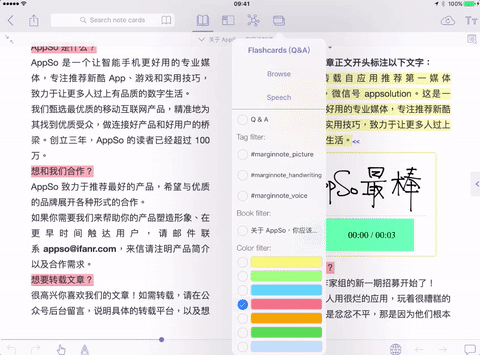

How to Digest Your Books with MarginNote
Eliza Wei
If you often review PDF or E-Pub documents and take notes from them,then you need MarginNote.It is a brand new e-reader integrating powerful tools for book annotation, mindmapping, flashcards and more, to build up your reading notes as never before.This app will dramatically increase your study efficiency and help you digest your books.

读书要由薄到厚，由厚到薄。
——华罗庚
Contents
MarginNote User Interface
Features
Platform
Download
 There are different ways for you to organize your PDFs and E-Pubs files.Folders can be created to categorize the documents.You can also retrieve the files from Dropbox, iCloud or to import from other IOS apps.
The bottom provides some options for adding comments and freehand drawing.
There are different ways for you to organize your PDFs and E-Pubs files.Folders can be created to categorize the documents.You can also retrieve the files from Dropbox, iCloud or to import from other IOS apps.
The bottom provides some options for adding comments and freehand drawing.
 It enables switching between different views -Book text, Outline, Mindmap or combinations of these.
You can highlight any text or diagram and add comments in one step. The right page shows the page comments and you can also add voice notes which will show up here.
It enables switching between different views -Book text, Outline, Mindmap or combinations of these.
You can highlight any text or diagram and add comments in one step. The right page shows the page comments and you can also add voice notes which will show up here.
Display notes on margin
The primary function of MarginNote is for a reader to define key pieces of information in an E-Book, supplement it with additional notes and make those two pieces of information available for review in a condensed format.

You just need to select a section of text, then a small window also opens where the color can be changed or additional information added. If you wish to dictate some thoughts on the text, you just need to hit a little microphone button at the bottom. Both notes and content can be displayed in same view without blocking each other.

Auto-create Outline and Mindmap
 After highlighting a book, it is time to view that information. On the left we have two options, the Outline view and the Mindmap. The Outline view is a hierarchical view of all the highlighted items and you can easily change the indent or position of any of the notes. Besides, the Mindmap will be automatically created based on the excerpts and the table of contents. You can also drag any PDF selection, pictures and texts to Mindmap. As for the two, any change to one will immediately reflect in the other.
After highlighting a book, it is time to view that information. On the left we have two options, the Outline view and the Mindmap. The Outline view is a hierarchical view of all the highlighted items and you can easily change the indent or position of any of the notes. Besides, the Mindmap will be automatically created based on the excerpts and the table of contents. You can also drag any PDF selection, pictures and texts to Mindmap. As for the two, any change to one will immediately reflect in the other.
Create flash cards for memorization
 You can edit a note as a card, and the app will create cloze flash cards with the same information, including the highlighted text, comments and voice messages, as a guide to memorize the information. When reviewing flashcards, MargiNnote will associate them with Mindmap and document if necessary.
You can edit a note as a card, and the app will create cloze flash cards with the same information, including the highlighted text, comments and voice messages, as a guide to memorize the information. When reviewing flashcards, MargiNnote will associate them with Mindmap and document if necessary.
Research with built-in browser
It is also possible to use the highlighted text as a search term in the MarginNote Web browser for future research. It supports Wikipedia, Google and Translator, etc.
Export in multiple formats
E-book files can be imported from cloud services such as Dropbox or ICloud and can even convert web pages to E-pub format for annotation. Multiple export options are as follows:
*PDF
*Anki
*Word
*Xmind
*Evernote
*IThoughts
*Mindmanager
*OmniOutliner

MarginNote is available on Mac, iPad and iPhone, and they all have almost the same features. All content will be automatically synced when switching from one device to another with iCloud enabled. MarginNote even supports Wifi transfer – so you can one-click sync multiple notebooks or books or the whole library.
Click Here!
You can watch tutorial videos on YouTube.
*To Learn More*